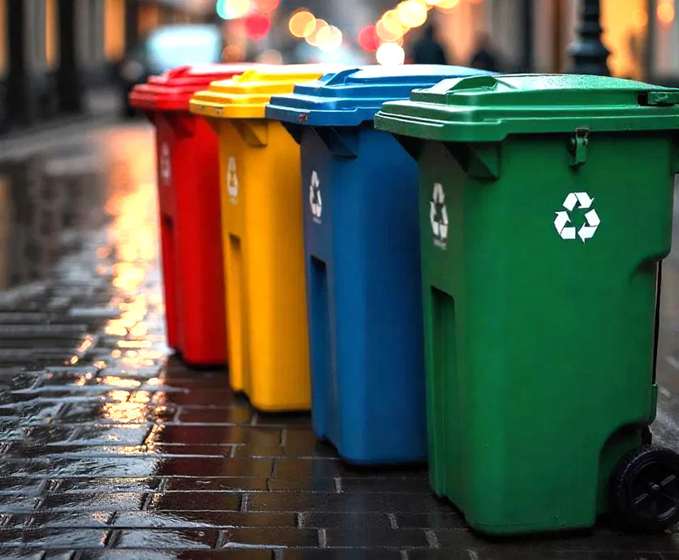
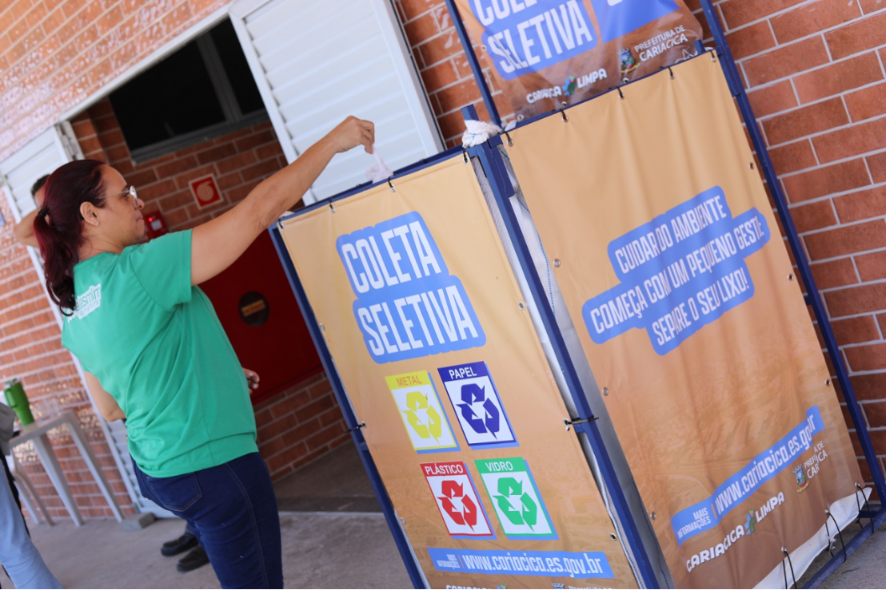
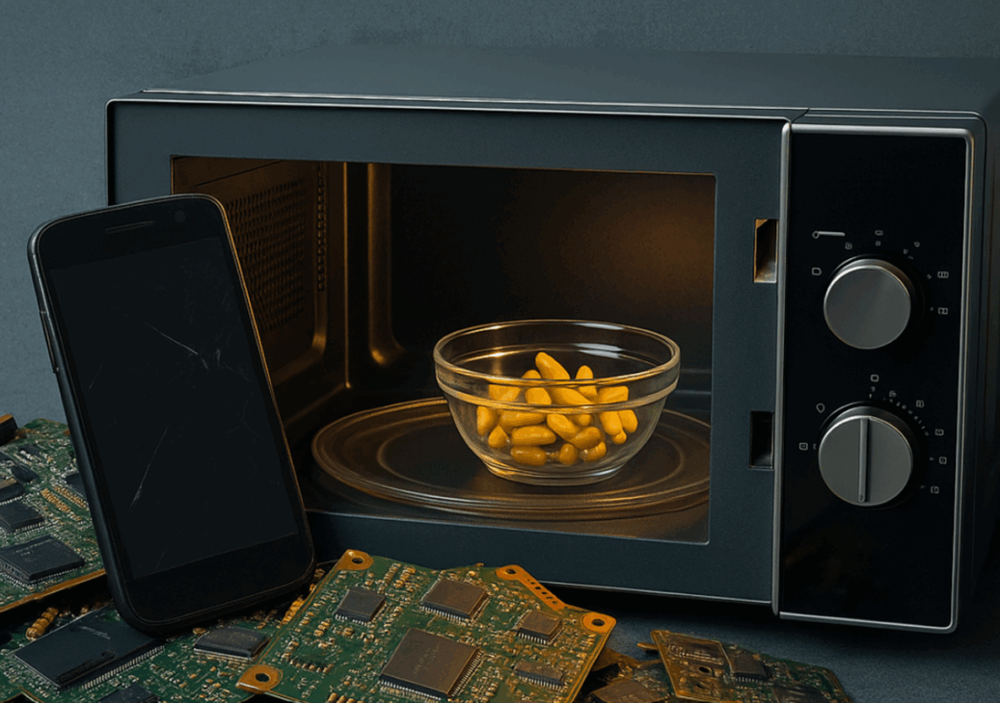

Notícias sobre Reciclagem

Brasil amplia rede de reciclagem
Ler matéria completa

Novo ponto de reciclagem é instalado no Mercado Municipal
Ler matéria completa

Por que o vidro é o material menos reciclado no Brasil
Ler matéria completa

Como os micro-ondas estão revolucionando a reciclagem de lixo eletrônico
Ler matéria completa